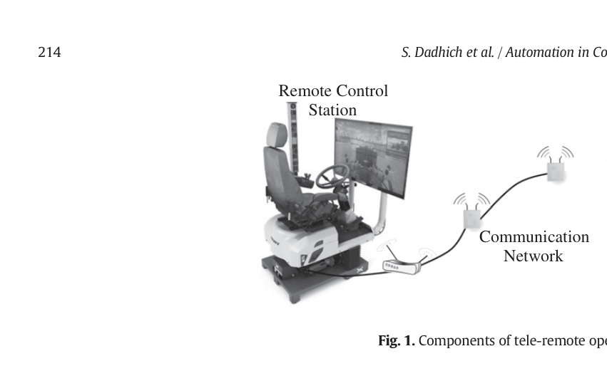
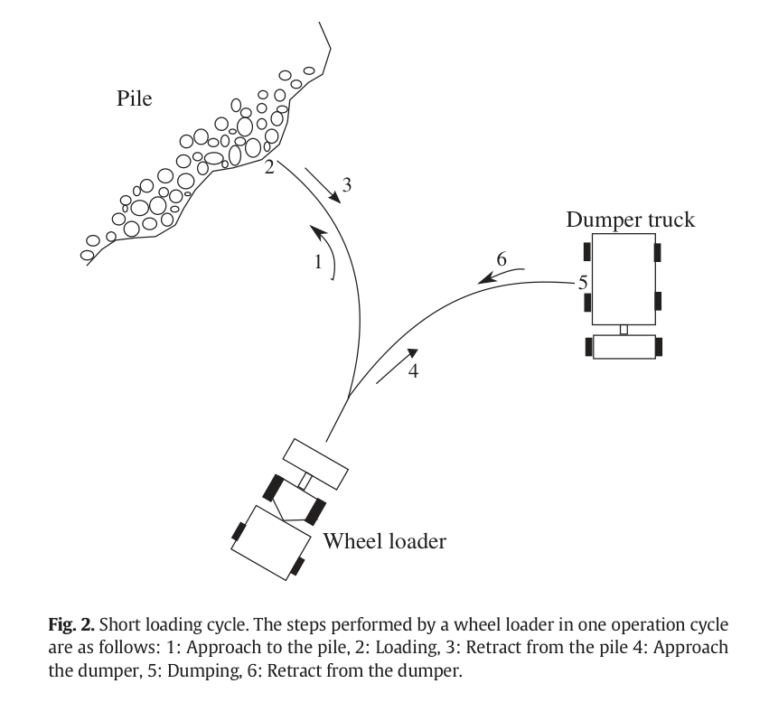
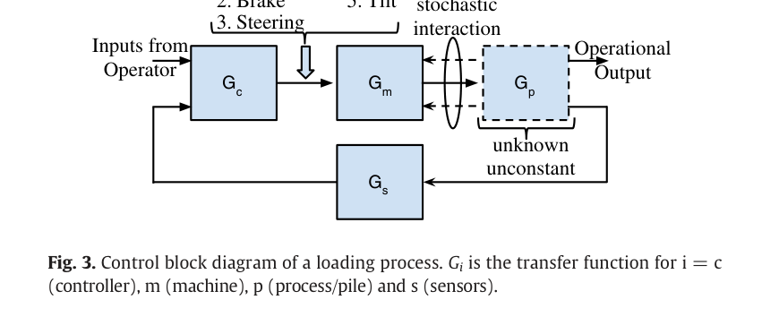
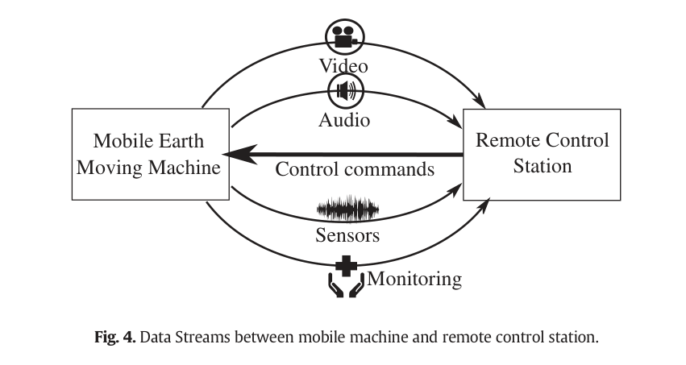
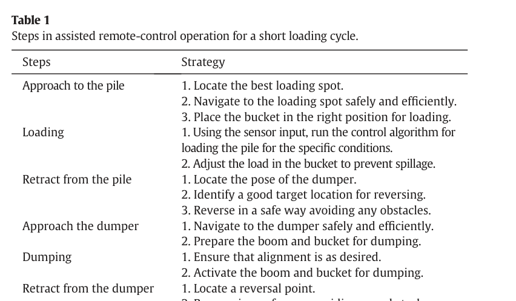
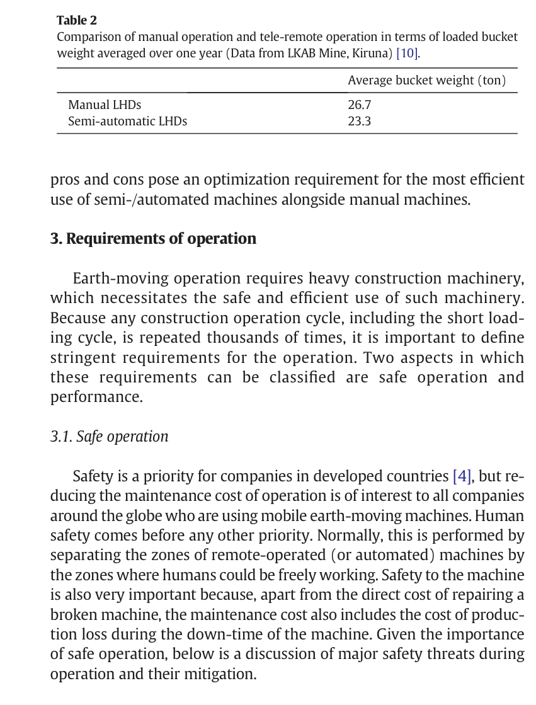

Luleå University of Technology / ProcessIT Innovations2016#074서베이·산업동향리뷰논문
토공 장비 자동화의 핵심 과제
Key Challenges in Automation of Earth-moving Machines
Siddharth Dadhich, Ulf Bodin, Ulf Andersson · Automation in Construction 68 (2016) 212-222
한줄 요약 — 버킷-재료 상호작용의 불확실성 때문에 단일 고정궤적이나 정밀 토양모델만으로는 휠로더 적재를 자동화하기 어렵다는 진단 아래, 안전·생산성·통신·운전자 인터페이스를 포함한 전 시스템을 검토하고 당시 굴착 적용사례가 없던 모델프리 강화학습을 재료·장비 변화에 적응할 유망 경로로 제안한 2016년 리뷰다.
1.연구 배경 및 동기
완전자율 적재가 늦어지는 이유를 기계 밖까지 확장해 묻다
휠로더와 지하광산 LHD는 토양·자갈·파쇄암을 가까운 덤프트럭이나 컨베이어로 옮기는 단주기 적재를 반복한다. 작업은 짧지만 버킷이 재료와 강하게 접촉하고 장비 자체도 V-Y 경로로 계속 이동한다. 논문은 장비 기구모델과 이동항법보다 버킷-재료 상호작용, 특히 비균질 파쇄암이 완전자율의 가장 어려운 부분이라고 본다.
2016년까지 약 30년간 자동화 연구가 이어졌지만 상용 완전자율 mobile earth-moving machine의 실증은 보고되지 않았다는 문제에서 출발한다. 정확한 pile model은 매 scoop 뒤 바뀌고, 큰 저항력은 유압구동기를 포화시키며 wheel slip까지 일으킨다. 따라서 단순 위치궤적은 낮은 밀도 재료에서는 가능해도 파쇄암에서는 일반해가 되기 어렵다.
논문은 자율화를 기계측 제어만의 문제로 좁히지 않는다. 원격운전에서는 영상·음향·진동·상태정보를 무선으로 보내야 하고 지연·손실·jitter가 운전자와 제어 성능을 바꾼다. HMI는 정보를 많이 보여주는 것이 아니라 필요한 정보만 지연 없이 제시해야 한다. 이 때문에 저자들은 완전자율을 단기 목표로 보기보다 보조 원격운전을 산업경험과 데이터를 축적할 수 있는 중요한 중간 단계로 제시한다.

원문 Figure 1 · PDF p.3 — Fig. 1. Components of tele-remote operation of earth-moving machine.

원문 Figure 2 · PDF p.3 — Fig. 2. Short loading cycle. The steps performed by a wheel loader in one operation cycle are as follows: 1: Approach to the pile, 2: Loading, 3: Retract from the pile 4: Approach the dumper, 5: Dumping, 6: Retract from the dumper.
선행 연구의 한계
버킷-재료 상호작용과 변화하는 더미 형상을 실시간으로 정확히 모델링할 수 없다.
고정 위치궤적은 고밀도 파쇄암의 큰 저항력에서 actuator saturation과 wheel slip을 일으킨다.
순응·퍼지·규칙·전향 제어의 결과가 서로 다른 장비와 토질에서 보고되어 직접 우열 비교가 어렵다.
자동 hauling은 산업적 성숙도가 높지만 자동 bucket loading은 인간 숙련자 수준의 충전률·시간·연료성능을 달성하지 못했다.
원격운전 연구는 통신계층과 운전자 경험을 기계 보조기능과 통합해 평가한 증거가 부족했다.
이 연구의 기여
단주기 적재의 자동화 수준, 절차, 안전·성능 요구를 하나의 문제분해로 제시했다.
자동적재를 위치, 순응, 전향, AI, 강화학습의 다섯 접근으로 평가했다.
pile characterization, 항법, 경로계획, 통신, HMI, IoT까지 자동화 범위를 확장했다.
Kiruna 광산의 수동·보조 원격 LHD 생산자료를 이용해 중간 자동화 단계의 이점과 격차를 함께 보였다.
파쇄암, 원격통신 성능, 운전자 경험을 핵심 지식공백으로 정리하고 모델프리 deep RL을 후속 후보로 제안했다.
2.방법론 및 시스템 구성
이 논문은 Automation in Construction에 출판된 리뷰로, 휠로더·LHD의 단주기 적재를 공통 작업골격으로 삼아 기존 연구를 정리한다. 수동에서 완전자율까지 5단계를 정의하고, 한 cycle을 더미 접근·적재·후진·덤프트럭 접근·덤프·복귀로 분해한다. 각 단계에 필요한 보조기능과 안전·성능 요구를 배치해 개별 기술의 위치를 비교한다.
기계측 문헌은 기구·유압 및 bucket-media 모델링, 자동적재 전략, pile characterization, 위치추정·항법, 경로계획으로 분류한다. 원격측 문헌은 무선 네트워크, end-to-end transport, HMI, task planning으로 분류하며 powertrain, 시뮬레이션, CPS·IoT를 보완영역으로 포함한다. 마지막으로 성숙한 연구와 현장검증이 부족한 영역을 대조해 지식공백과 향후 시스템구성을 제안한다.
처리 파이프라인
1
자동화 성숙도 정의
수동, 현장 가시권 원격, 원거리 원격, 보조 원격, 완전자율의 5단계로 사람과 기계의 역할을 구분한다.
2
단주기 작업분해
25~30초 범주의 적재주기를 6개 절차로 나누고 각 단계에 위치선정·항법·버킷준비·적재·덤프 기능을 배치한다.
3
요구사항과 산업사례 분석
충돌·wheel slip 같은 안전요구와 충전률·연료효율·주기시간을 정리하고 Kiruna LHD 수동·보조 원격 자료를 비교한다.
4
자동적재 접근 비교
위치, 순응, 전향, AI, 강화학습을 모델 의존성·센싱·적응성·실험매체 관점에서 평가한다.
5
통신·HMI 검토
WLAN·4G의 변동성, TCP·UDP·SCTP·DCCP·TFRC 특성, 다중감각 원격 HMI와 task planner를 검토한다.
6
지식공백과 미래 시스템 제시
파쇄암 학습, 통신 프로토콜, 운전자 감각을 우선 공백으로 정하고 RL, SLAM, machine-to-machine 협조, 보조 원격운전을 후속 방향으로 제시한다.
원문 수식과 의미

원문 Figure 3 · PDF p.5 — Fig. 3. Control block diagram of a loading process. Gi is the transfer function for i = c (controller), m (machine), p (process/pile) and s (sensors).
3.핵심 기술
자동적재 전략의 다섯 갈래
위치제어는 계획경로를 따르지만 더미 내부가 보이지 않고 비균질 재료에서 실행가능 경로를 미리 알 수 없다. 순응제어는 bucket cylinder pressure나 힘으로 경로를 바꾸며, 전향제어는 토양력을 외란으로 간주해 미리 보상한다. AI는 전문가 규칙을 퍼지·신경망으로 옮기고, 강화학습은 모델 없이 환경과 상호작용해 행동을 찾는다.
저자들은 2016년 당시 로봇 굴착에 RL이 적용된 사례를 알지 못한다고 명시하면서도 작업이 episodic이고 scoop 사이 계산시간이 있어 실시간 제약이 상대적으로 덜하며, 숙련자 데이터를 imitation learning의 초기정책으로 쓸 수 있다고 본다. 다만 모델프리라는 이유만으로 최적성이나 안전을 보장하지는 않는다고 선을 긋는다.
낮은 밀도 재료에는 위치제어가 가능하지만 파쇄암에는 불충분
순응제어는 저항력 기반 궤적수정에 적합
전향제어는 반복력에 유리하나 일반 토질 예측오차가 남음
RL은 재료·장비 변화 대응 후보지만 당시 굴착 직접 적용증거 없음
안전·생산성 요구의 정량 프레임
안전에는 사람 접근, wheel slip, 벽·암석·차량 충돌, 도랑 진입이 포함된다. 레이저·레이더 항법은 성숙했지만 분진과 안개에서 성능이 떨어질 수 있다. wheel slip은 적재 시 큰 저항력에 운전자가 과도한 throttle을 넣을 때 발생하며 타이어와 운용비를 악화시킨다.
생산성은 충전률을 주기시간으로 나눈 물질처리율과 연료효율을 함께 봐야 한다. 원격 LHD가 수동보다 bucket weight가 낮았던 Kiruna 사례는 부분 자동화가 특정 하위지표는 개선해도 전체 인간 성능을 바로 넘지는 못한다는 점을 보여준다.
충전률, 연료효율, 주기시간을 공동 평가
실린더 압력으로 bucket weight 추정 가능
짧은 주기와 연료소비 사이 trade-off
보조기능 효과와 전체 생산성 격차를 구분
원격운전의 실시간 통신 설계
원격 운전에는 제어명령 상향과 video, audio, sensor vibration, monitoring data 하향 스트림이 공존한다. WLAN과 LTE-Advanced는 높은 명목속도를 제공하지만 광산의 다중경로와 간섭 때문에 실제 용량이 변하고, 포화 시 queue와 link retransmission이 큰 지연·jitter를 만든다.
TCP는 손실 패킷 재전송과 순서보장 때문에 head-of-line blocking을 일으키고 UDP는 혼잡제어가 없어 네트워크를 과부하시킬 수 있다. SCTP의 unordered delivery, multihoming, partial reliability와 DCCP·TFRC의 rate control이 대안으로 검토되며 mission-critical stream에는 QoS 우선순위가 필요하다.
통신부하는 항상 가용 무선용량보다 충분히 낮게 설계
제어·안전 메시지를 영상보다 우선 전송
SCTP multihoming으로 WLAN 장애 시 4G 전환 가능
오래된 영상·제어메시지는 partial reliability로 폐기 가능
Pile 인지와 이동계획의 결합
stereo vision과 laser는 다음 scoop의 attack pose, 장기 작업계획, 큰 암석 검출, 버킷 충전률 추정에 사용된다. 단주기 항법에서는 wheel loader와 dump truck의 상대위치, 벽과 바위 회피, 울퉁불퉁한 지면의 3D 관계가 중요하다.
미래 시스템은 SLAM으로 발파 뒤 계속 변하는 현장의 최신 지도를 만들고, loader와 dumper가 machine-to-machine 통신으로 경로와 점유를 조정해야 한다. 이는 자동적재 알고리즘만이 아니라 site management와 유지보수까지 연결되는 CPS 구조다.
더미 형상·암석분포·적재위치를 시각·LiDAR로 추정
2D보다 3D 상대위치가 단주기 지면변화에 적합
SLAM 지도를 장비와 현장관리 시스템에 공유
CAN·추가 센서 데이터를 IoT 기반 상태감시와 연결

원문 Figure 4 · PDF p.7 — Fig. 4. Data Streams between mobile machine and remote control station.
4.실험 결과
실험 환경·장비·데이터
새로운 독립 장비실험을 수행한 논문이 아니라 문헌리뷰와 기존 Kiruna 광산 생산사례를 분석한 연구다.
자동적재 문헌은 굴착기·휠로더의 위치·순응·전향·AI 접근과 전규모 운전자 연구를 비교한다.
실험 프로토콜
자동화 5단계와 단주기 6절차를 정의해 기존 기술을 기능별로 배치한다.
안전·충전률·연료효율·주기시간 요구를 기준으로 문헌과 산업사례를 해석한다.
자동 bucket loading 방법을 모델 의존성, 실험재료, 센서요구, 적응성 관점에서 비교한다.
원격운전은 무선링크, transport protocol, HMI, task planning으로 나누어 위험과 후보해법을 정리한다.
연구가 많은 영역과 직접 현장증거가 부족한 영역을 대조해 지식공백을 도출한다.
비교 기준
수동 LHD와 tele-remote·semi-automatic LHD
순수 원격 scoop과 자동 boom·bucket 보조 scoop
위치·순응·전향·AI·강화학습 적재전략
TCP·UDP·SCTP·DCCP·TFRC 전송특성
굴착기 중심 연구와 이동성이 큰 휠로더·LHD 연구
평가 지표
평균 bucket weight와 fill factor
연료효율·operation cost 비중
short loading cycle time
무선 throughput·delay·jitter·loss
운전자 경험과 수동운전 대비 생산성
핵심 결과 해석
Kiruna 사례에서 보조기능은 순수 tele-remote scooping보다 두 시험장비의 평균 bucket weight를 거의 5% 높였다. 그러나 1년 생산자료의 평균 bucket weight는 수동 LHD 26.7톤, semi-automatic LHD 23.3톤으로 여전히 수동이 높았다. 저자들은 발파 파쇄도와 큰 암석이 bucket 내부 공극을 바꾸므로 이 값들을 절대적인 알고리즘 성능치가 아니라 산업지표로 해석해야 한다고 경고한다.
자동적재 방법 가운데 어떤 접근도 인간 숙련자를 일반적으로 능가했다고 결론낼 수 없었다. 위치제어는 파쇄암 저항력에서 취약하고, 순응제어는 힘센싱과 튜닝이 필요하며, 전향제어는 모델오차에 노출된다. 퍼지·신경망은 전문가 지식을 옮기지만 그 행동이 기계적으로 최적인지 보장하지 않는다. RL은 유망하지만 당시 굴착 직접 적용과 현장 안전증거가 없었다.
리뷰의 가장 강한 결론은 완전한 단주기 자동화가 단·중기에는 실현 가능성이 낮으며, 보조 원격운전이 유효한 전환단계라는 것이다. 향후 자동적재는 재료와 장비 변화에 적응해야 하고, LiDAR 기반 pile 인지, SLAM, loader-dumper 통신, QoS가 보장된 무선링크, 최소정보 HMI, 현장관리 시스템이 하나의 운영체계로 결합되어야 한다.
정량 결과
평가 항목
정량 결과
조건·맥락
원문 근거
보조 적재기능의 bucket weight 개선
거의 5%
Kiruna 광산의 두 LHD에서 순수 tele-remote scooping 대비 자동 boom·bucket 보조기능 사용 시; 인용 산업사례
PDF p.3
1년 평균 bucket weight
수동 26.7 ton, semi-automatic 23.3 ton
Kiruna 광산의 수동 LHD 8대와 semi-automatic LHD 5대 생산자료; 파쇄도 차이 때문에 지표로 해석
이 논문이 제안한 RL 방향은 현재 기술로 구체화할 수 있지만, 리뷰가 경고한 시스템 문제를 잊어서는 안 된다. 정책은 bucket motion만 학습하는 것이 아니라 fill factor, cycle time, fuel, slip, collision을 함께 보상에 넣고 압력·안정성 제약을 별도 안전층으로 가져야 한다. 파쇄암 크기와 더미 형상에 따른 정책 조건화도 필수다.
원격감독과 완전자율을 이분법으로 나누지 않고 통신상태와 불확실성에 따라 권한을 전환하는 shared autonomy가 자연스러운 후속 구조다. 정상 링크에서는 사람이 attack pose를 승인하고, 순간 지연에서는 로컬 적재기가 계속하며, 인지·힘 예측의 불확실성이 커지면 안전정지와 재요청으로 전환하는 상태기계를 설계할 수 있다.
파쇄암 point cloud·압력·slip을 관측하는 안전제약 RL 적재정책
fill factor·cycle time·fuel을 함께 쓰는 다목적 보상과 Pareto 평가
통신 QoS와 정책 불확실성에 따른 수동-보조-자율 권한 전환
loader와 dumper의 상대 3D 위치·점유시간을 공유하는 협조계획
운전자 workload·override·near-miss까지 포함한 현장 HRI 검증
7.전체 그림·표
본문 핵심 위치에 배치하지 않은 원문 Figure와 Table을 원문 페이지 순서로 수록한다.

원문 Table 1 · PDF p.3 — Table 1 Steps in assisted remote-control operation for a short loading cycle.

원문 Table 2 · PDF p.4 — Table 2 Comparison of manual operation and tele-remote operation in terms of loaded bucket weight averaged over one year (Data from LKAB Mine, Kiruna) [10].
섹션별 원문 근거 페이지
배경: p.1, p.2, p.3, p.4
방법론: p.2, p.3, p.4, p.5, p.6, p.7, p.8, p.9
실험: p.3, p.4, p.5, p.6
결과: p.3, p.4, p.5, p.6, p.7, p.8, p.9, p.10
한계: p.6, p.7, p.8, p.9, p.10
원문·기존 요약·관련 자료
원문 PDFpdf
추출·교차검증 근거
2016 Key challenges in automation of earth-moving machines.pdf